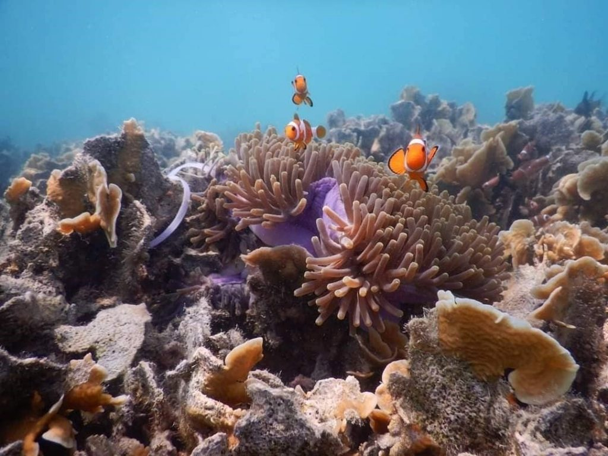

| Coral reefs are underwater structures made up of coral, which are invertebrate animals. There are various different species of corals, ranging from the mushroom-like Fungia to the branching ones. Coral reef ecosystems are environments in which numerous marine animals (such as corals, anemones, sponges, and many species of fish) interact with each other. |  |
| Tourist Activities/Effects | Impact on Coral Reefs |
Touching/stepping on coral when diving, snorkeling, or swimming. |
Fragile coral branches could break. The coral would experience stress, and in fighting it off, the coral would end up going through coral bleaching, which is when they appear white as they expel algae that live in them. Bleached corals die and would no longer contribute to the reef ecosystem. |
Pollution and inefficient waste management |
The waste can result in the release of harmful chemicals, sewage, and excessive nutrients in the waters, which leads to not just reduced water quality, but also coral bleaching and algal blooms. |
results
In Pulau Pramuka, the corals that live in APL grow the best, since the corals are in a safe, isolated location
With greater water depth, there is higher buoyant force, meaning there is less force exerted on corals by human weight. Thus, corals in shallower waters are more vulnerable to human weight as they are more accessible to tourists.
The more tourist projects, the more biodiversity.